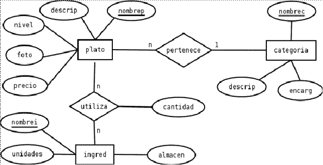

Las bases de datos surgieron para poder solucionar los inconvenientes planteados con los sistemas de ficheros.
Las bases de datos brindan al usuario control de la redundancia, consistencia de los datos, mayor informacion con el mismo volumen de datos, comparticion de datos y un mantenimiento de estandares a nivel empresarial, nacional e internacional.
Su arquitectura se describe en los siguientes tres niveles :
A nivel conceptual , se describen como objetos de los cuales se desea guardar información
A nivel físico, se definen los registros y campos, la longitud de los campos, reglas de validación, etc
A nivel externo , se describen las distintas vistas que los usuarios pueden tener de los datos almacenados . Se describen tantas vistas en el nivel extremo como tipos de usuario de la base de datos existan.
Con la arquitectura en tres niveles , se introduce el concepto de independencia de datos:
Independencia lógica: probabilidad de modificar el esquema conceptual de la base de datos sin tener que modificar los temas externos, ni los programas.
Independencia física: Se refiere a la posibilidad de modificar el esquema interno sin tener que modificar ni el esquema conceptual ni los esquemas externos .
Un modelo entidad-relación es una herramienta para el modelo de datos, la cual facilita la representación de entidades de una base de datos.
En este modelo usamos elementos como lo son las entidades ( representadas como rectangulos).
Estas nos proporcionan informacion gracias a sus claves ( divididas en principales y candidatas)
y a su vez a las interrelaciones que se dan lugar con otras entidades (estas tambien pueden ser debiles,
es decir que depende de otra entidad).
Por otro lado tenemos el modelo relacional. El modelo relacional para el modelado y la gestión de bases de datos es un modelo de datos basado en la lógica de predicados y en la teoría de conjuntos. En este modelo usamos varias reglas como lo son la normalizacion o las reglas de transformación (entre otras), para asi poder adaptar diseños realizados en el modelo entidad-relacion, al modelo relacional. Un ejemplo de esto seria la trasnformacion de las entidades en tablas cuyo contenido son los atributos / entidades anteriormente mencionadas. Si se trata de una clave principal , se le añadira la abreviatura PK ( Primary Key), si es una clave candidata NN+U y si se trata de una clave foranea, FK . Estas ultimas claves, son claves que identifican una columna o grupo de columnas en una tabla que se refiere a una columna o grupo de columnas en otra tabla.